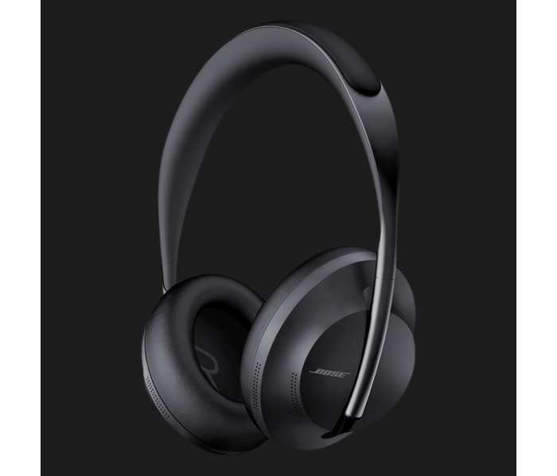
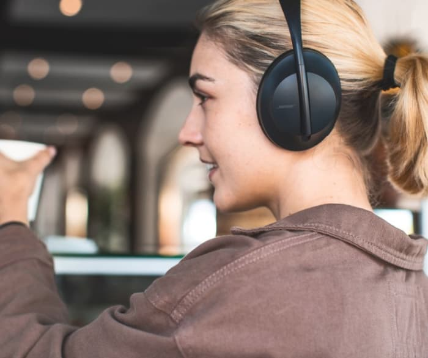
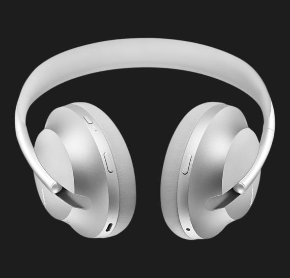
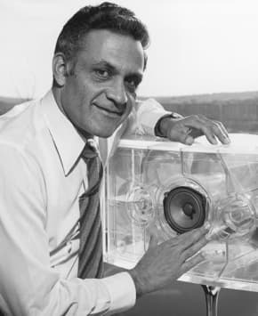

Наушники с шумоподавлением, которые способны на многое
До 20 часов воспроизведения
Наушники Bose NC 700
Премиальный дизайн и комфорт
-
11 уровней шумоподавления
С новыми наушниками Bose Noise Cancelling Headphone 700 можно плавно увеличить или уменьшить уровень шумоподавления. Вас слышно отлично и вы слышите собеседника четко, даже в шумной обстановке!
-
Комфорт на максимум
Стильная, легкая дужка из нержавеющей стали с мягкими, расположенными под углом чашками наушников для комфортной посадки. Внутренняя сторона выполнена из мягкой гелевой подкладки, которая хорошо прилегает к голове.
способны на многое
Роскошь тишины
Максимальное наслаждение
Для того чтобы создать комфортную атмосферу — поднимайте уровень за уровнем от "прозрачного" режима до максимального блокирования звуков. Режим разговора можно активировать в один клик с помощью специальной кнопки.
Хрустальный звук
Система динамиков и фирменный активный эквалайзер способны обеспечить качественный и мощный звук на любом уровне громкости. Вы можете быть уверены в отсутствии искажений и кристальной чистоте высоких и низких частот.
Bose AR
Фирменная технология
Bose AR — это уникальная аудиоплатформа дополненной реальности, что открывает перед вами новые грани звучания. Она позволяет вам оставаться на связи с реальным миром и одновременно погружаться в виртуальную вселенную.
Гарантии
-
Гарантия возврата денег в течение 90 дней
Если вы не удовлетворены продуктом на 100% вы можете вернуть его обратно и получить полный возврат денег
-
1 год гарантии
Вне зависимости от страны вашего проживания, если ваши наушники сломались, мы вышлем вам новые
история создания бренда
История Bose Corporation началась с разочарования. В 1956 году аспирант Массачусетского технологического института Амар Боуз (Amar Bose) приобрёл одну из лучших по тем временам стереосистем для своего дома. После нескольких минут прослушивания аудиозаписи его недоумение сменилось разочарованием.
С точки зрения Амара звук был настолько плоским и неестественным, что лучше не слушать музыку вовсе, чем слушать её в столь искажённом виде.

Разочарование Боуза переросло в твёрдую решимость – создавать аудиотехнику, которая будет передавать звук безупречно точно и естественно.
Никогда не переставайте мечтать. Всегда мечтайте о лучшем, и думайте о том, как этого достичь.
обзоры
Bose Сorporation
Critically acclaimed for their powerful noise cancelling, astonishing sound, and unrivaled voice pickup, Bose Noise Cancelling Headphones 700 help turn any space into the perfect place to listen to music, get work done, or just shut out the world for a few moments and relax.
- 01
- 02
- 03
- 04
FAQ
-
Как выполнить сопряжение с мобильнымустройством? ?
Во-первых, убедитесь, что ваши наушники включены одним нажатием верхней кнопки на задней стороне правого наушника. Затем нажмите и удерживайте кнопку питания в течение 3x секунд, чтобы перевести наушники в режим сопряжения. Обратите внимание: если вы подключаете наушники впервые, они автоматически включаются сразу в этом режиме сопряжения. Голосовые подсказки предоставят вам дополнительные инструкции. Мы рекомендуем вам использовать приложение Bose Music для завершения процесса сопряжения, однако вы также можете использовать настройки Bluetooth на своем устройстве. -
Каков диапазон беспроводной связи у Bose NC 700? ?
Во-первых, убедитесь, что ваши наушники включены одним нажатием верхней кнопки на задней стороне правого наушника. Затем нажмите и удерживайте кнопку питания в течение 3x секунд, чтобы перевести наушники в режим сопряжения. Обратите внимание: если вы подключаете наушники впервые, они автоматически включаются сразу в этом режиме сопряжения. Голосовые подсказки предоставят вам дополнительные инструкции. Мы рекомендуем вам использовать приложение Bose Music для завершения процесса сопряжения, однако вы также можете использовать настройки Bluetooth на своем устройстве. -
Как сложить наушники Bose NC 700 для хранения? ?
Во-первых, убедитесь, что ваши наушники включены одним нажатием верхней кнопки на задней стороне правого наушника. Затем нажмите и удерживайте кнопку питания в течение 3x секунд, чтобы перевести наушники в режим сопряжения. Обратите внимание: если вы подключаете наушники впервые, они автоматически включаются сразу в этом режиме сопряжения. Голосовые подсказки предоставят вам дополнительные инструкции. Мы рекомендуем вам использовать приложение Bose Music для завершения процесса сопряжения, однако вы также можете использовать настройки Bluetooth на своем устройстве. -
Работает ли гарантия на международном уровне? ?
Во-первых, убедитесь, что ваши наушники включены одним нажатием верхней кнопки на задней стороне правого наушника. Затем нажмите и удерживайте кнопку питания в течение 3x секунд, чтобы перевести наушники в режим сопряжения. Обратите внимание: если вы подключаете наушники впервые, они автоматически включаются сразу в этом режиме сопряжения. Голосовые подсказки предоставят вам дополнительные инструкции. Мы рекомендуем вам использовать приложение Bose Music для завершения процесса сопряжения, однако вы также можете использовать настройки Bluetooth на своем устройстве.
обратная связь
Мы поможем подобрать вам подходящие наушники